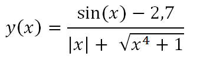
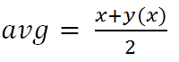
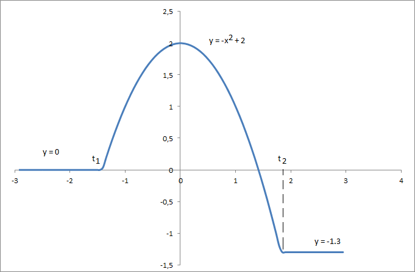

| Под поверхностью машины движется программа. Без
усилий, она расширяется и сжимается. Находясь в
великой гармонии, электроны рассеиваются и
собираются. Формы на мониторе – лишь рябь на воде.
Суть остаётся скрытой внутри… Мастер Юан-Ма, "Книга программирования" |
Пример. По заданному значению аргумента x вычислить значение функции y(x)
и найти среднее арифметическое значений x и y(x)
Решение
В текстовом редакторе (рекомендуется Notepad++) создадим файл laba1_1.html и ввести следующий код:

После сохранения будет создана пустая веб-страница с заголовком "LABA #1 part 1", в чем можно убедиться, открыв файл в любом интернет-браузере. В дальнейшем, чтобы просмотреть изменения после редактирования кода, нужно будет либo открыть файл в браузере, либо обновить его.
Далее дополним код страницы между тегами <script> и </script> :

Результат работы:


Полный текст кода страницы:

Пример. Функциональная зависимость y(x) задана на рисунке:
Необходимо
Решение
Поскольку нам неизвестны границы интервалов t1 и t2, то следует их найти.
t1 будет отрицательным решением уравнения

(отрицательным - потому что слева от начала координат, вид уравнения определяется пересечением графиков у=0 и у=-х2+2)
откуда следует, что

t2 будет положительным решением уравнения

откуда следует, что

Таким образом, нашу зависимость можно представить аналитически:

Создадим файл laba1_2.html и подготовим шаблон, как в предыдущем задании, изменив заголовок на "LABA #1 part 2".
Введем код между тегами <script> и </script> :

Продолжаем вводить код:


Результаты работы:


Как мы видим, в математических расчетах имеются незначительные погрешности, возникающие вследствие ошибок округления в числах с плавающей точкой. Почему это происходит, изложено, например, здесь.
Полный текст кода страницы:


Образец титульного листа отчета в формате doc: download.
Варианты индивидуальных заданий в формате pdf: download.